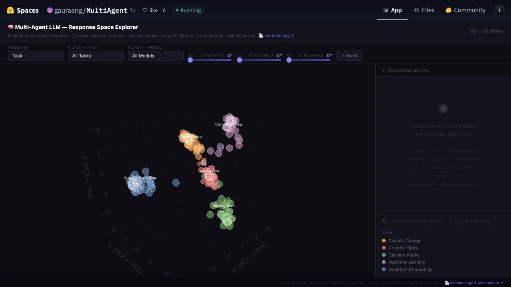
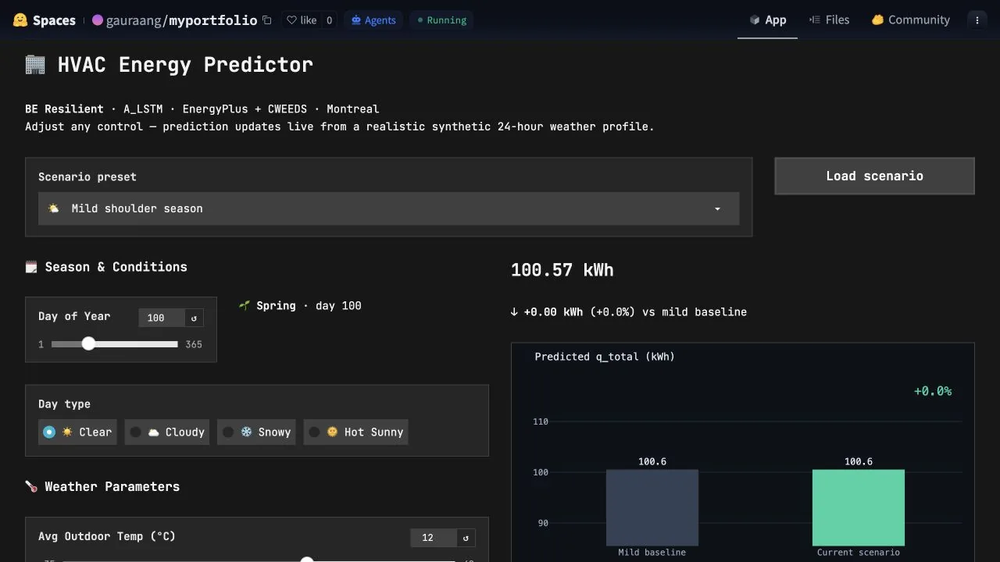
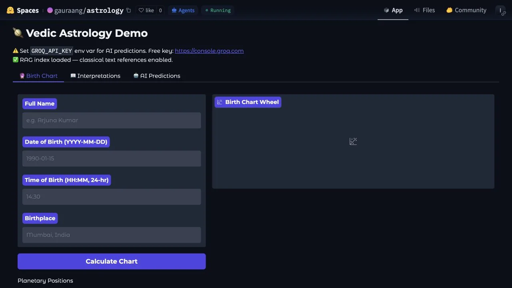

Vector Memory
Semantic search across project knowledge using cosine and Euclidean similarity. This module is not yet a live demo.
AI researcher working across intelligent systems and the built environment.
Exploring multi-agent AI, building-energy research, and creative experiments in music and astrology.
Real interfaces, hosted on Hugging Face Spaces. A sleeping Space may take a moment to wake.

Applied AI Systems Multi-Agent System Explore 199 agent responses across tasks, models, and a rotatable response space. Hosted on Hugging Face · may wake on launch Launch demo
Building & Energy ML Building Energy Predictor Adjust weather and seasonal controls to inspect an LSTM-based HVAC energy prediction. Hosted on Hugging Face · may wake on launch Launch demo
Creative Inquiry Astrology with TinyLlama A playful experiment combining planetary calculations, text references, and local-model interpretation. Hosted on Hugging Face · may wake on launch Launch demoSemantic search across project knowledge using cosine and Euclidean similarity. This module is not yet a live demo.
Research systems, local AI infrastructure, data products, and visual research communication.
Agent vector search with research triangulation to investigate hallucination mitigation and response-space structure.
View on GitHub ↗A modular on-premises AI system combining machine-learning and language-model pipelines for local inference.
View on GitHub ↗An integration layer for connecting heterogeneous local and cloud AI systems and pipelines.
View on GitHub ↗A creative AI experiment using planetary movement data and language-model interpretation.
View on GitHub ↗Ensemble forecasting that combines technical indicators with NLP-based analysis of financial news.
View on GitHub ↗


Technical ideas made legible through workshops, talks, and community events.
The AI hierarchy, supervised ML, RAG, and how vector embeddings help investigate hallucination.
View on LinkedIn ↗A corporate workshop on ML fundamentals, transformer architecture, RAG systems, and AI-agent components.
View on LinkedIn ↗A community meetup about trust in AI products and building confidence through incremental validation.
View on LinkedIn ↗A community event bringing together Montréal’s applied AI practitioners.
View on Luma ↗Multi-agent architecture, RAG, local-model evaluation, and research tooling.
Simulation-informed modelling, HVAC prediction, clustering, and explainability.
Interactive demos, dashboards, workshops, and evidence-aware storytelling.

Gauraang is a Building Engineering PhD researcher, McGill graduate, and founder of Le Laboratoire Kalkin.
The work connects intelligent systems, buildings, research practice, culture, music, and playful experiments such as astrology.
Evidence boundary: research claims require evidence; philosophy and creative inquiry offer questions, metaphors, and perspective rather than scientific proof.
Full bio & CV